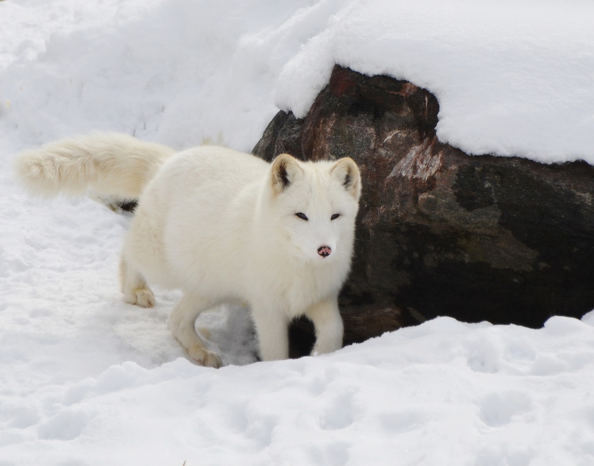

The Coolest Creature
The Artic Fox
The Arctic fox (Vulpes lagopus), also known as the white fox, polar fox, or snow fox, is a small fox native to the Arctic regions of the Northern Hemisphere and common throughout the Arctic tundra biome. It is well adapted to living in cold environments. It has a deep, thick fur which is brown in summer and white in winter. Its body length ranges from 46 to 68 cm (18 to 27 in), with a generally rounded body shape to minimize the escape of body heat. The Arctic fox preys on any small creatures such as: lemmings, voles, ringed seal pups, fish, waterfowl, and seabirds. It also eats carrion, berries, seaweed, insects, and other small invertebrates. Arctic foxes form monogamous pairs during the breeding season and they stay together to raise their young in complex underground dens. Occasionally, other family members may assist in raising their young.